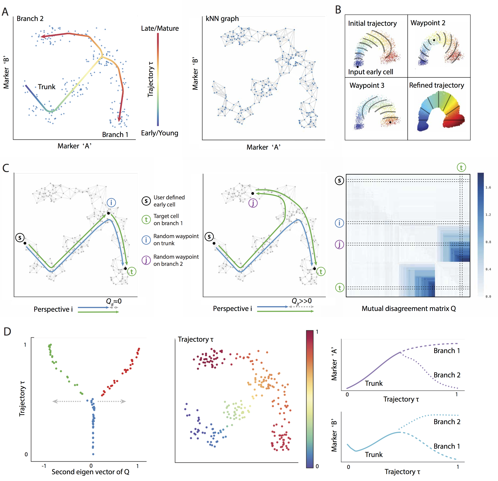

|
|
Wishbone |
 Wishbone is an algorithm to align single cells from differentiation systems with bifurcating branches. Wishbone uses a graph based approach to simultaneously order cells and their branch associations using high dimensional data. Wishbone has been designed to work with multidimensional single cell data from diverse technologies such as Mass cytometry and single cell RNA-seq and achieves high accuracy and resolution.
If you use Wishbone for your publication, please cite the following article:
Setty M*, Tadmor MD*, Reich-Zeliger S, Angel O, Salame TM, Kathail P, Choi K, Bendall SC, Friedman N, Pe'er D. Wishbone identifies bifurcating developmental trajectories from single-cell data. Nature Biotechnology, 2016.
You can download the data generated for the manuscript here.
You can download the processed data here.
A MATLAB (for MAC and Windows) implementation of Wishbone can be found here.
A Python implementation of Wishbone can be found here . Please note that the MATLAB version of Wishbone currently supports only mass cytometry data. Please use the python version for single cell RNA-seq data.
|
|